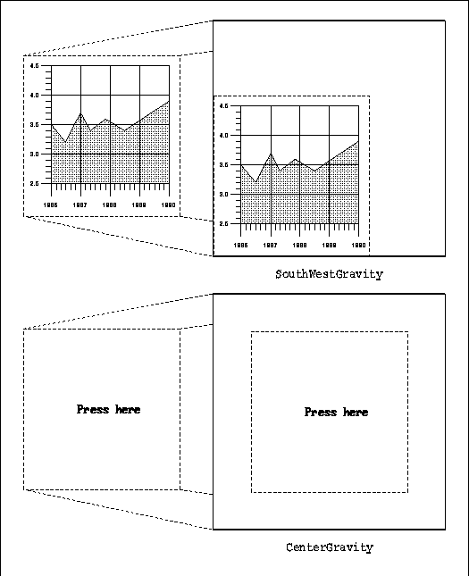
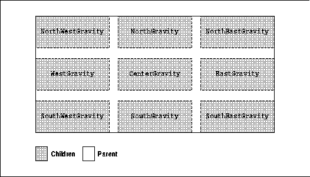

Xlib Programming Manual (O'Reilly & Associates, Inc.) |
Now that you know the basic X concepts and you have seen the code for an X application, we can go back and start to describe various aspects of Xlib in full detail. This chapter describes the window attributes thoroughly. The window attributes were introduced in Section 2.2.1, "Window Characteristics" and described in more detail in Section 2.4.1, "Window Attributes." You should read those sections before proceeding.
The setting of window attributes becomes necessary when you use XCreateWindow() instead of the simpler XCreateSimpleWindow(). However, it is not essential that you set any window attributes other than the window background and border. Therefore, this chapter is mainly about optional features that you may find useful.
You will continue to find this chapter useful as a reference
even when you are an experienced X programmer. A useful quick reference
to the window attributes is also provided inside the back cover of Volume
Two, Xlib Reference Manual.
The procedure for setting the attributes is the same with
XCreateWindow() or XChangeWindowAttributes(). You set the
members of an XSetWindowAttributes structure to the desired values,
create a mask indicating which members you have set, and call the routine
to create the window or change the attributes.
Example 4-1 shows the structure that is used to set the window attributes.
The XSetWindowAttributes structure
typedef struct _XSetWindowAttributes {
Pixmap background_pixmap; /* Pixmap, None, or ParentRelative */
long background_pixel; /* Background pixel value */
Pixmap border_pixmap; /* Pixmap, None, or CopyFromParent */
long border_pixel; /* Border pixel value */
int bit_gravity; /* One of the bit gravity symbols */
int win_gravity; /* One of the window gravity symbols */
int backing_store; /* NotUseful, WhenMapped, or Always */
long backing_bitplanes; /* Planes to be preserved, if possible */
long backing_pixel; /* Value to use in restoring planes */
Bool save_under; /* Should bits under window be saved */
long event_mask; /* Events that should be queued */
long do_not_propagate_mask; /* Events that shouldn't propagate */
Bool override_redirect; /* Override redirected configuration
* requests */
Colormap colormap; /* Colormap associated with window */
Cursor cursor; /* Cursor to be displayed or None */
} XSetWindowAttributes;
To set the window attributes, you need to set the elements
of the XSetWindowAttributes structure to the desired values and
then set a valuemask argument that represents which members are
to be changed in the server's internal structure. A symbol specifying each
member to be changed is combined with the bitwise OR operator (|).
These symbols are shown in Table 4-1. They begin with the letters CW
("Create Window" or "Change Window") because the routines they are used
in have those capital letters in their names.
| Member | Flag | Bit |
|---|---|---|
| background_pixmap | CWBackPixmap | 0 |
| background_pixel | CWBackPixel | 1 |
| border_pixmap | CWBorderPixmap | 2 |
| border_pixel | CWBorderPixel | 3 |
| bit_gravity | CWBitGravity | 4 |
| win_gravity | CWWinGravity | 5 |
| backing_store | CWBackingStore | 6 |
| backing_planes | CWBackingPlanes | 7 |
| backing_pixel | CWBackingPixel | 8 |
| override_redirect | CWOverrideRedirect | 9 |
| save_under | CWSaveUnder | 10 |
| event_mask | CWEventMask | 11 |
| do_not_propagate_mask | CWDontPropagate | 12 |
| colormap | CWColormap | 13 |
| cursor | CWCursor | 14 |
For example, if you want to set the initial values of the background and border pixel values, you would follow the procedure shown in Example 4-2.
Setting window attributes while creating a window
If the window already exists, you can change those same attributes with the procedure shown in Example 4-3.Display *display; Window parent, window; int x, y; unsigned int width, height, border_width; int depth; int screen_num; Visual *visual; unsigned int class; XSetWindowAttributes setwinattr; unsigned long valuemask; /* (Must open display) */ screen_num = DefaultScreen(display); valuemask = CWBackPixel | CWBorderPixel; setwinattr.background_pixel = WhitePixel(display, screen_num); setwinattr.border_pixel = BlackPixel(display, screen_num); window = XCreateWindow(display, parent, x, y, width, height, border_width, depth, class, visual, valuemask, &setwinattr);
Changing window attributes of existing window
You can also use separate calls to XSetWindowBackground() and XSetWindowBorder() to set these particular attributes. These and a few other attributes have routines for setting them individually. (These routines are referred to as convenience routines. They are provided for the attributes that most often need to be set without modifying any other attributes.) Table 4-2 lists the attributes that can be set individually and the routines that set them. But it is important to realize that each of these routines would generate a separate protocol request to the server, so if more than one attribute is to be set, it is more efficient to use the procedures shown above in Examples 4-2 and 4-3.Display *display; Window window; XSetWindowAttributes setwinattr; unsigned long valuemask; /* (Must open display, create window) */ valuemask = CWBackPixel | CWBorderPixel; setwinattr.background_pixel = WhitePixel(display, screen_num); setwinattr.border_pixel = BlackPixel(display, screen_num); XChangeWindowAttributes(display, window, valuemask, &setwinattr);
| Attribute | Routine for Setting It |
|---|---|
| background_pixmap | XSetWindowBackgroundPixmap() |
| background_pixel | XSetWindowBackground() |
| border_pixmap | XSetWindowBorderPixmap() |
| border_pixel | XSetWindowBorder() |
| event_mask | XSelectInput() |
| colormap | XSetWindowColormap() |
| cursor | XDefineCursor() or XUndefineCursor() |
Section 4.3, "Settable Attributes" describes all of the
attributes and the routines for setting them.
One group of attributes controls the appearance of a window. These are background_pixel, background_pixmap, border_pixel, border_ pixmap, colormap, and cursor. Most clients will set the border, background, and cursor but use the default colormap.
A second group is provided to allow clients to improve their redrawing performance under certain conditions. These are backing_pixel, backing_planes, backing_store, bit_gravity, and save_under. These attributes do not affect the appearance or operation of a client. It is advisable to consider bit_gravity when designing a client, but the code for using these attributes can be added after a client's functionality is complete.
The event_mask and do_not_propagate_mask attributes control the selection and propagation of events. These attributes are described briefly in this chapter but also in much more detail in Chapter 8, "Events."
The win_gravity attribute provides a means for relocating a window automatically when its parent is resized. Applications can take advantage of this feature to simplify the code that positions their subwindows when they are resized.
The override_redirect attribute controls whether requests to map or reconfigure the window can be intercepted by the window manager. override_redirect is meant to be set for the most temporary types of windows such as pop-up menus. In practice, this attribute only affects the top-level windows of an application (all children of the root window).
As described in Chapter 2, there are two window classes: InputOutput and InputOnly. The class of a window is specified in the call to XCreateWindow(), or is InputOutput if the window is created with XCreateSimpleWindow().
InputOutput windows have all of the attributes described in the sections below. InputOnly windows have only the following subset of attributes:
The two attributes that control the background are background_pixmap and background_pixel, set by XSetWindowBackgroundPixmap() and XSetWindowBackground(), respectively.
These two attributes are not independent since they affect the same pixels. Either attribute can take precedence over the other, the winner being the one that is set last. If both are set in the same call to XCreateWindow() or XChangeWindowAttributes(), the background_pixel value is used.
The background of exposed areas of windows is automatically repainted by the server, regardless of whether the application selects Expose events.
However, changes in background attributes will not take effect until the server generates the next Expose event on that window. If you want the new background to be visible immediately, call XClearWindow() and flush the request buffer with XFlush().
Applications must set one or the other for all windows. Otherwise, the results are undefined. Most applications set backgrounds to a solid color by setting the background_pixel attribute. The easiest way to do this is by setting the last argument of XCreateSimpleWindow() to BlackPixel or WhitePixel().
The pixmap may be any size, though some sizes may be tiled faster than others. To find the most efficient tile size for a particular screen, call XQueryBestTile().
A pixmap must be created with XCreatePixmap() or XCreatePixmapFromBitmapData() before being set as the background_pixmap attribute. The pixmap must have the same depth as the window and be created on the same screen. These characteristics are assigned to a pixmap as it is created. (For more information on creating pixmaps for tiles, see Section 6.1.5, "Creating Bitmaps, Pixmaps, Tiles, and Stipples.")
The background_pixmap attribute has the following possible values:
By the way, the symbol CopyFromParent is not used for setting the background, but it will not cause an error, since its value is the same as None.
The background_pixel attribute has the following possible values:
Unlike changes to the window background, changes to a window's border attributes are reflected immediately. No call to XClearWindow() or call to flush the request buffer is necessary. This feature makes it possible to use the window border for indicating a client's state. But you cannot use the border of the top-level window, since some window managers manipulate this border to indicate the keyboard focus window (see Section 8.3.2.1, "The Keyboard Focus Window" for a description of the keyboard focus).
The design of a pattern for the border will be different from the background pixmap, because the border width is usually narrow (at most four pixels).
The two attributes that affect the border are border_pixmap and border_pixel. XSetWindowBorderPixmap() and XSetWindowBorder() can be used to set these attributes. Like the window background, whenever one of these routines is called, it overrides the previous setting of the border. If they are both set simultaneously with XCreateWindow() or XChangeWindowAttributes(), the border_pixel attribute takes precedence.
Most applications simply set the border_pixel to BlackPixel or WhitePixel() in the next-to-last argument of XCreateSimpleWindow().
The border_pixmap attribute has the following possible values:
The border_pixel attribute has the following possible values:
Bit gravity is never necessary in programs. It does not affect the appearance or functionality of the client. It is used to improve performance in certain cases. Some X servers may not implement bit gravity and may throw out the window contents on resizing regardless of the setting of this attribute. This response is the default for all servers. That is, the default bit gravity is ForgetGravity, which means that the contents of a window are always lost when the window is resized, even if they are maintained in backing store or because of a save_under (to be described in Sections 4.3.5 and 4.3.6).
The window is tiled with its background in the areas that are not preserved by the bit gravity, unless no background is defined, in which case the existing screen is not altered.
There is no routine to set the bit_gravity individually; it can be set only with XChangeWindowAttributes() or XCreateWindow().
The bit_gravity attribute has 11 possible values:
bit_gravity for a graphing application

Each compass constant, such as SouthWestGravity, indicates the placement of the retained region in the window after resizing. In this case, the lower-left corner of the existing pixels is placed against the lower-left corner of the resulting window. When an Expose event arrives, the application need only redraw the two new strips of the window at the top and right side. No Expose event will be generated on the area that was saved because of bit_gravity.
For another example, think of a window containing centered text. If that window were resized either larger or smaller, we would still like the text to be centered. In this case, the bit_gravity should be set to CenterGravity. Then only if the window is resized smaller than the length of the text would we have to redraw the area and only then to break the line or use a shorter message. We could see whether changing the message would be necessary by looking at the ConfigureNotify event that occurs as a result of the resize (see basicwin in Chapter 3, "Basic Window Program"). The window would still have to be redrawn if it were obscured and then exposed, of course--bit gravity only saves some of the redrawing that would otherwise have to be done.
If the constant were NorthGravity, the top center of the pixels in the window before the resize would be placed against the top center of the resulting window. This would be appropriate if we had a line of text centered at the top of the window that we wished to preserve when possible.
NorthGravity specifies that the child window should be moved horizontally by an amount one-half as great as the amount the window was resized in the horizontal direction. The child is not moved vertically. That means that if the window was originally centered along the top edge of the window, it will also be centered along the top edge of the window after resizing. If it was not originally centered, its relative distance from the center may be accentuated or reduced depending on whether the parent is resized larger or smaller.
Window gravity is only useful for children placed against or very near the outside edges of the parent or directly in its center. Furthermore, the child must be centered along one of the outside edges or in a corner. Figure 4-2 shows the nine child positions where window gravity can be useful and the setting to be used for each position.
Child positions where window gravity is useful

If any other setting is used for any of these positions, the window gravity may move the child outside the resized parent, since there are no checks to prevent this. The application can try to prevent it by getting the new position of the child from a ConfigureNotify event (see Section 3.2.16, "Handling Resizing of the Window") and moving the child inside if necessary. But this will cause a flash when the child window is automatically placed incorrectly and then moved to the correct position by the application. And if an application has to go to the trouble to check the position and move the child, it might as well just forget about window gravity and place the child itself.
NorthWestGravity (the default) indicates that the child (for which this attribute is set) is not moved relative to its parent.
UnmapGravity specifies that the subwindow should be unmapped when the parent is resized. This might be used when a client wishes to recalculate the positions of its children. Normally, the children would appear in their old positions before the client could move them into their recalculated positions. This can be confusing to the user. By setting the win_gravity attribute to UnmapGravity, the server will unmap the windows. They can be repositioned at the client's leisure, and then the client can remap them (with XMapSubwindows()) in their new locations.
There is no routine to set the win_gravity attribute individually; it can be set only with XChangeWindowAttributes() or XCreateWindow().
The win_gravity attribute has the following possible values:
These servers can be instructed when to back up a window and which planes to save, through the backing store attributes. Even when it is available, the backing store should be avoided since it may carry a heavy performance penalty on the server. You can find out whether backing is supported on a particular screen with the DoesBackingStore() macro.
A client might use this feature to back up a window the client is incapable of redrawing for some reason or to be able to draw into a window that is obscured or unmapped.
Three separate attributes control backing: backing_store, backing_planes, and backing_pixel. There are no routines for setting these attributes individually (use XChangeWindowAttributes() or XCreateWindow()). The backing_store attribute determines when and if a window's contents are preserved by the server. The backing_planes attribute specifies which planes must be preserved, and backing_pixel specifies the pixel value used to fill planes not specified in backing_planes. The X server is free to save only the bit planes specified in backing_planes and to regenerate the remaining planes with the specified pixel value.
When the backing store feature is active and the window is larger than its parent, the server maintains complete contents, not just the region within the parent's boundaries. If the server is maintaining the contents of a window, Expose events will not be generated when that window is exposed.
Use of the backing store does not make a window immune to the other window attributes. If the bit_gravity is ForgetGravity, the contents will still be lost whenever the window is resized.
The backing_store attribute has the following possible values:
The backing_pixel attribute specifies a pixel value (default 0) to be used in planes not specified in the backing_plane attribute.
Pop-up windows are usually children of the root window and, therefore, are not constrained to appear within the application's top-level window. Therefore, without save_under both your application and other applications on the screen would need to redraw areas when the pop-up window is unmapped.
Setting save_under is never necessary, but it can improve the performance of the server running clients that frequently map and unmap temporary windows. The user would otherwise have to wait for the area under the menu to be redrawn when the menu was unmapped.
There is no routine for setting the save_under attribute individually; it can only be set with XChangeWindowAttributes() or XCreateWindow().
The save_under attribute is different from the backing store; save_under may save portions of several windows beneath a window for the duration of the appearance of the window on the screen, while the backing store saves the contents of a single window while it is mapped or even when unmapped, depending on the attributes.
Not all servers are capable of saving under windows. You can find out whether this feature is supported on a particular screen with the DoesSaveUnders() macro.
The save_under attribute has the following possible values:
The event_mask attribute specifies which event types are queued for the window when they occur. The do_not_propagate_mask attribute defines which events should not be propagated to ancestor windows when the event type is not selected in this window. Both masks are made by combining the constants listed below using the bitwise OR operator (|).
Much more information on setting the event masks, including examples, is presented in Chapter 8, "Events." This is a very important topic.Button1MotionMask KeyPressMask Button2MotionMask KeyReleaseMask Button3MotionMask LeaveWindowMask Button4MotionMask NoEventMask Button5MotionMask OwnerGrabButtonMask ButtonMotionMask PointerMotionHintMask ButtonPressMask PointerMotionMask ButtonReleaseMask PropertyChangeMask ColormapChangeMask ResizeRedirectMask EnterWindowMask StructureNotifyMask ExposureMask SubstructureNotifyMask FocusChangeMask SubstructureRedirectMask KeymapStateMask VisibilityChangeMask
Setting the override_redirect attribute True for a window allows a window to be mapped, moved, resized, or its border width changed without the intervention of the window manager. This override is usually done for menus that are frequently mapped and almost immediately unmapped again.
Under properly designed window managers, there is a property you can set to tell the window manager to allow a window to pop up with minimal intervention (XA_WM_TRANSIENT_FOR). This is used for dialog boxes, as described in Section 12.3.1.4.6, "Transient Window Field."
There is no routine for setting the override_redirect attribute individually; it must be set with XChangeWindowAttributes() or XCreateWindow().
The override_redirect attribute has the following possible values:
For the large majority of clients without special color needs, this attribute can be left in its default state. By default, the colormap attribute from the parent is taken, which, if all ancestors of the window have used the default, will be the default colormap. This means that the default colormap for the screen will be used to translate into colors the pixel values drawn into this window.
If the client requires its own colormap for some reason, the client can create a colormap and set the colormap attribute to the ID of the new colormap. A colormap ID is of type Colormap.
The window manager will read this attribute and install the specified colormap into the hardware colormap when the user indicates that the application should be active. If the system only has one hardware colormap, all other applications will appear in false colors. This is one good reason that applications are encouraged not to create their own colormaps but to use the default colormap instead.
To understand this process, you need to know more about colormaps in X, and for that, see Chapter 7, "Color."
XSetWindowColormap() sets the colormap attribute, which can be set to the following values:
Most clients will define a suitable cursor for their top-level window and other cursors for each subwindow if needed. For example, xterm specifies the thin text cursor for the main window and a vertical bidirectional arrow for the scrollbar.
A cursor can be associated with any InputOutput or InputOnly window using the cursor attribute. Then the specified cursor will track the pointer while the pointer is within the window's borders.
A primary purpose for having a different cursor in a window is to indicate visually to the user that something different will happen to keyboard or button input while in the window. Another reason might be to change a cursor's color to increase its visibility over the background of certain windows (although there is another way to obtain contrast, with the cursor mask). There are probably other uses for a separate cursor.
A call to XDefineCursor() sets this attribute to a Cursor, and a call to XUndefineCursor() sets it back to None, which means that the cursor of the parent is used. The resource Cursor must be created before calling XDefineCursor(). This can be done with XCreateFontCursor(). XCreateGlyphCursor(), or XCreatePixmapCursor(), as described in Section 6.5.1, "The Standard Cursor Font." The cursor resource can be freed with XFreeCursor() when no further explicit references to it are to be made.
The cursor attribute has the following possible values:
The background, border, and event_mask attributes
need to be set for virtually all windows.
| Member | Default Value |
|---|---|
| background_pixmap | None |
| background_pixel | Undefined |
| border_pixmap | CopyFromParent |
| border_pixel | Undefined |
| bit_gravity | ForgetGravity |
| win_gravity | NorthWestGravity |
| backing_store | NotUseful |
| backing_planes | All 1 's (ones) |
| backing_pixel | 0 (zero) |
| override_redirect | False |
| save_under | False |
| event_mask | 0 |
| do_not_propagate_mask | 0 |
| colormap | CopyFromParent |
| cursor | None |
The current state of most of the programmable attributes, the read-only attributes, and the window configuration can be read with XGetWindowAttributes(). All this information is returned in an XWindowAttributes structure (not an XSetWindowAttributes structure).
Example 4-4 shows the fields of the XWindowAttributes structure that are not present in XSetWindowAttributes.
Read-only XWindowAttributes members
typedef struct {
/* Members writable with XChangeWindowAttributes omitted */
.
.
.
/* Window geometry -- set by window configuration functions
* in cooperation with window manager */
int x, y; /* Location of window */
int width, height; /* Width and height of window */
int border_width; /* Border width of window */
/* This is the event_mask attribute set by XSelectInput */
long your_event_mask; /* My event mask */
/* Set when the window is created, not changeable */
Visual *visual; /* The associated visual structure */
int class; /* InputOutput, InputOnly */
int depth; /* Depth of window */
Screen *screen; /* Pointer to screen the window is on */
/* Server sets these members */
Window root; /* Root of screen containing window */
Bool map_installed; /* Is colormap currently installed */
int map_state; /* IsUnmapped, IsUnviewable, or
* IsViewable */
long all_event_masks; /* Events all clients have interest in */
} XWindowAttributes;
As you can see, the members of XWindowAttributes that
cannot be directly written with XChangeWindowAttributes() are separated
into four groups.
The first group provides a way to get the window geometry. This information is returned by XGetGeometry(), but it might be useful to use XGetWindowAttributes() instead if you need both the geometry and a few attributes.
The your_event_mask member can be useful if you want to add event mask symbols to those already selected. In a call to XSelectInput(), you must always specify all the desired event masks. If you do not know which event masks are already selected or do not want to bother passing an event_mask argument into one of your routines, you could read the existing event mask here. Then you could OR in any additional event mask symbols before calling XSelectInput() or XChangeWindowAttributes(). See Chapter 8, "Events," for more information on the use of event masks.
The depth, class, visual, and screen members are set when the window is created. If the window was created with XCreateSimpleWindow(), they were inherited from the parent. If the window was created with XCreateWindow(), these members were specified as arguments, except screen, which is indirectly specified by the parent argument. The screen member points to a structure that tells you about the screen on which this window was created. This is one of the Screen structures from the list in the Display structure, and therefore, the information it contains can also be gotten from the macros as described in Section 3.2.3, "Display Macros" and Appendix C, Macros, of Volume Two, Xlib Reference Manual. Again, these should only be needed for convenience to avoid having to pass around these values as arguments or global variables.
The root member tells you the ID of the root window on the screen on which your window was created. It is usually more convenient to use the RootWindow() macro.
The map_installed member can be monitored to tell your application whether the colormap it has set in its colormap attribute is currently installed. If not, the application may be displayed in false colors. See Chapter 7, "Color," for more details.
The map_state member can be monitored by a program and used to turn off processing while a window is unviewable. Some applications that continuously poll for input or draw (such as in action games) can stop doing so and save processor cycles when there is no chance of getting input or no point in drawing.
The all_event_masks member tells you all the event types that are selected by all clients on the window requested. This is the OR of all the event_mask attributes for that window for all clients. By contrast, your_event_mask specifies only the events selected by your client.
Also note that XWindowAttributes is missing a few
fields that are present in XSetWindowAttributes. This means that
there are some fields that can be set but not queried. These fields are
the background and border pixel value and pixmap and the cursor. The designers
of X decided to make these fields nonreadable to reduce restrictions on
the implementation of backgrounds, borders, and cursors in the server.
Xlib Programming Manual (O'Reilly & Associates, Inc.) |